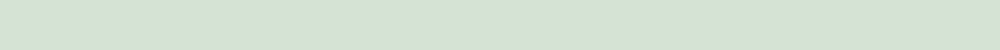
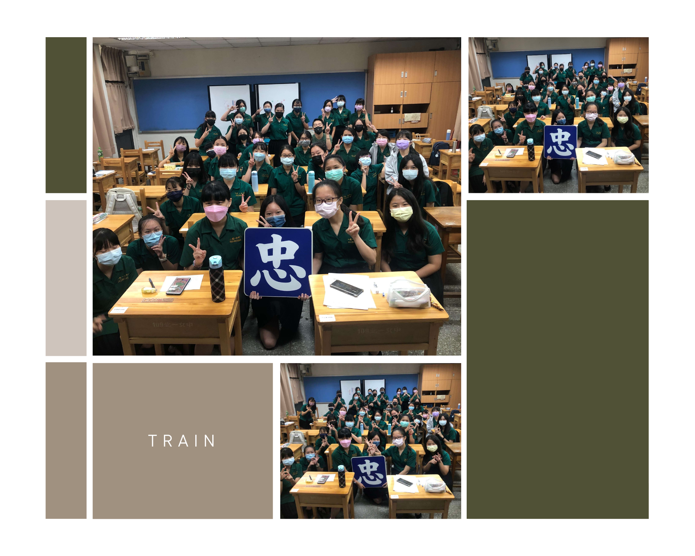
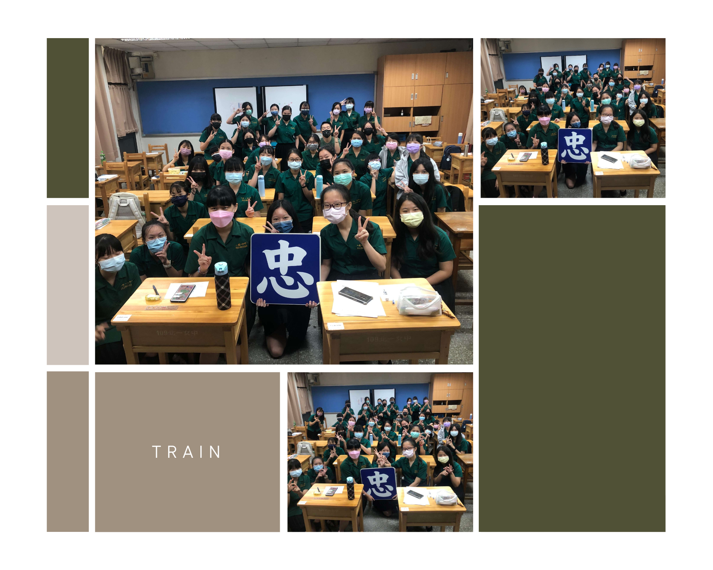

 

新訓對我來說最特別的呢，當然是早上坐佑庭家的的車來學校，這真的是很酷。
一到學校就開始社交，只能說到處跑來跑去加同學進班群花費了我整年的社交能力，還有一堆走錯班的同學，差點就把他們也加進班群了。
多虧了人美心善的輔班學姐，讓我們大致熟悉了綠園的生態（?，但是去活動中心排隊的人潮真的讓人很混亂，一不小心跟丟班牌就迷路了。
中午就是大家接收學姐愛的時候啦，我學姐是輔班所以沒辦法給我食物，我認真是看著左鄰右舍桌上的美食流口水欸，超想喝手搖的(幸好我現在正在喝)。
之後就是Ringo的閃亮登場了，不得不說我一開始真的覺得我要完蛋了，因為他講得英文我一句都聽不懂！
然後又很愛講，每一句都講，那時候我就懷疑難道其他同學都聽得懂嗎，但後來發現好像否，大家都不想聽全英文啦！
到第二天大家也漸漸熟起來了，最熱鬧的還是後面的八卦搖滾區了吧，全班都是他們的聲音，輔班學姐還揪我們打雀魂，真好，果然是日文班哪！
BY 小樹
忠班幼兒園
照片牆
活動
特別感謝